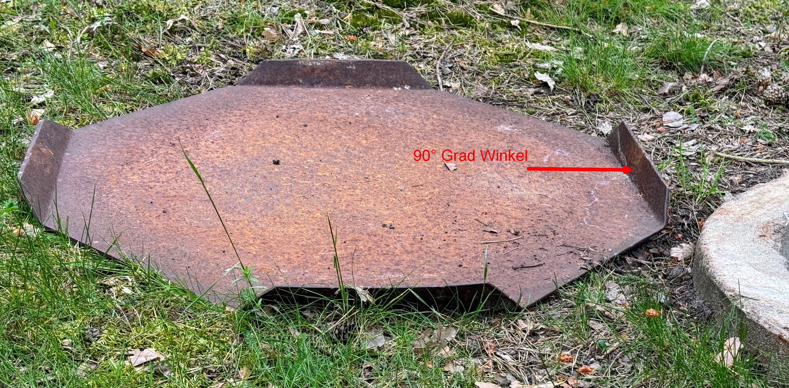
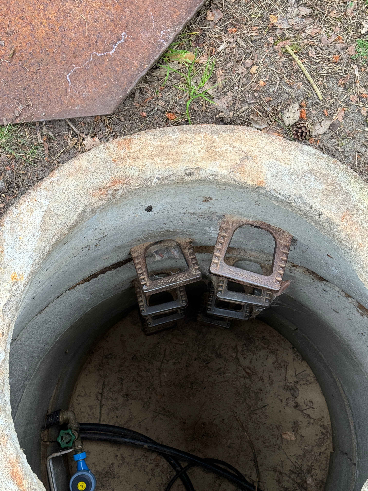
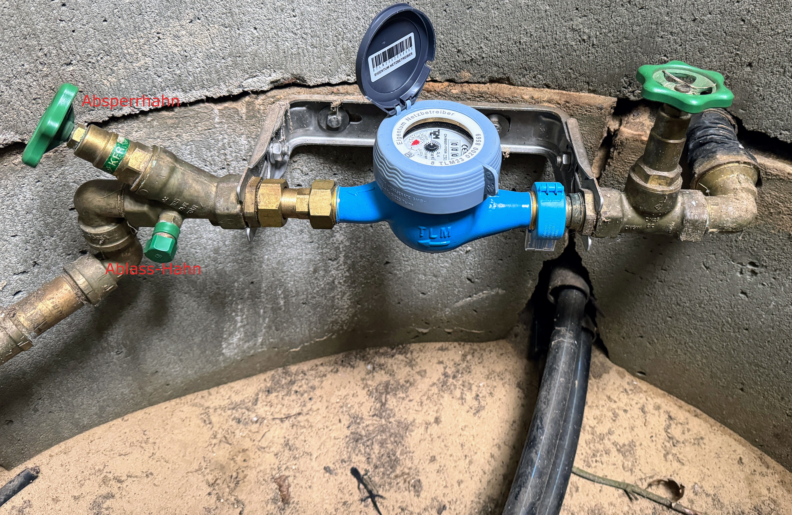
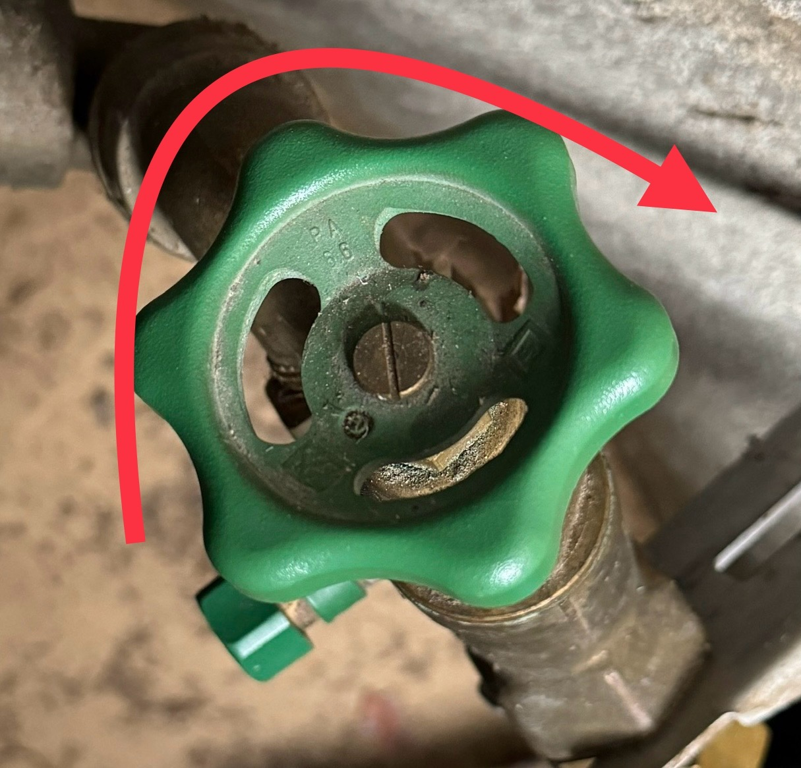

Der Schacht befindet sich in Richtung der Straßenlaterne

Der Deckel ist etwas klein. Man kann es nicht erreichen, das er flach aufliegt. Sein Halteecken sind auch verschieden stark abgewinkelt. Die Ecke mit dem 90° Grad Abkantung sollte zu der Seite mit den Stufen.
Die Stufen sind fest in der Wand einbetoniert.
Der linke Hahn wird betätigt.
Zudrehen rechtsrum.
